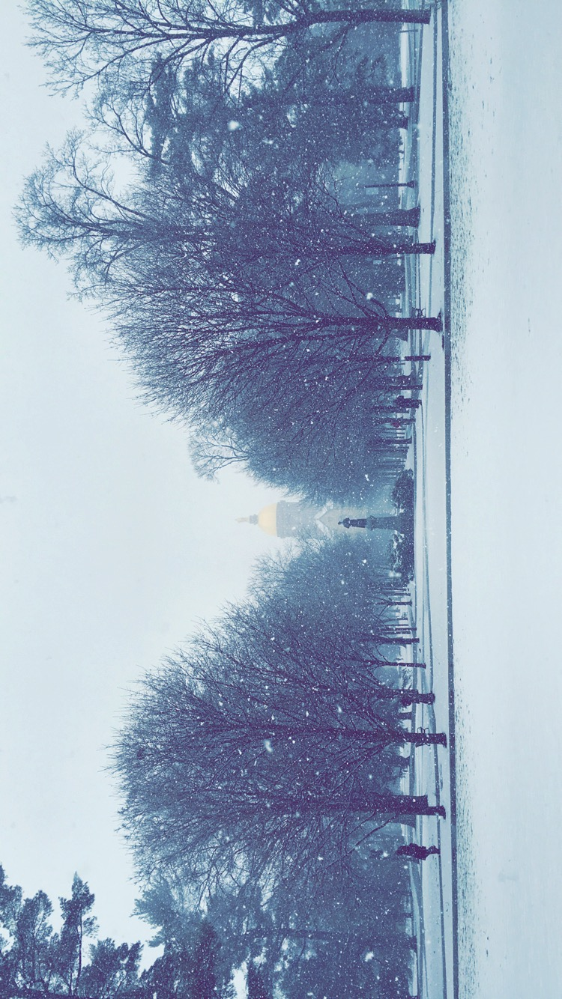

Bio:

My name is Esmeralda Cervantes and I am a junior at the University of Notre Dame in South Bend, Indiana. I am majoring in computer science, with a minor in Latino studies. Although I was born and raised in East Los Angeles, California, I traded in the year-round sunshine for the opportunity to experience all four seasons. I mostly built this website from scratch to show that I could do it if need be. I know it's not very practical and it remains to be seen if I will actually update it and fill with real content. ¯\_(ツ)_/¯